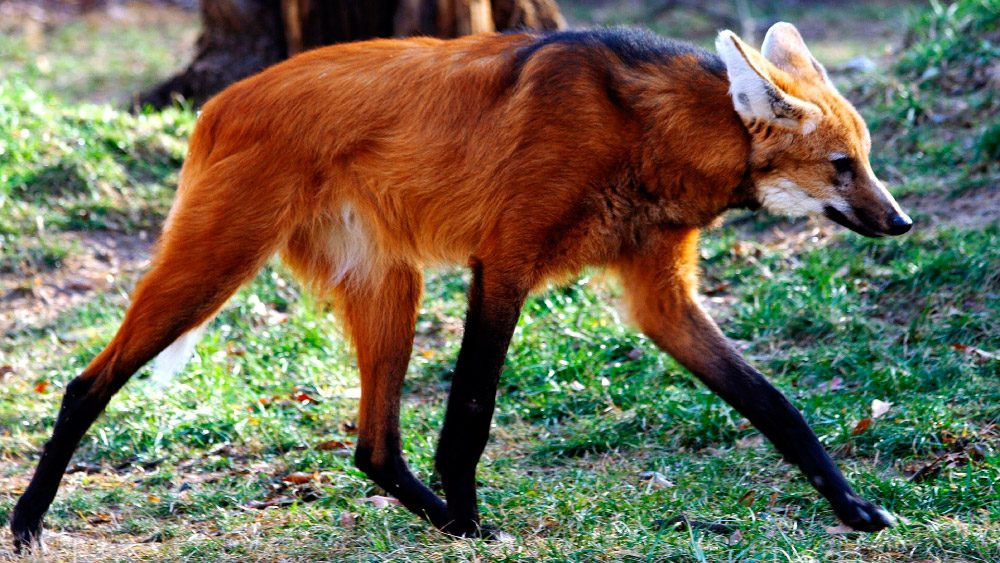
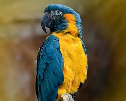

Introducción
Los animales en peligro de extinción forman parte esencial del equilibrio natural y reflejan la riqueza de la biodiversidad de nuestro planeta. Su desaparición afecta directamente a los ecosistemas, alterando cadenas alimenticias y provocando cambios irreversibles en el clima y los hábitats.
En Bolivia y el mundo, muchas especies como el jaguar, el cóndor andino y el delfín rosado enfrentan un futuro incierto debido a la caza, la tala indiscriminada y la contaminación. La concienciación y educación ambiental son herramientas clave para revertir esta situación.


